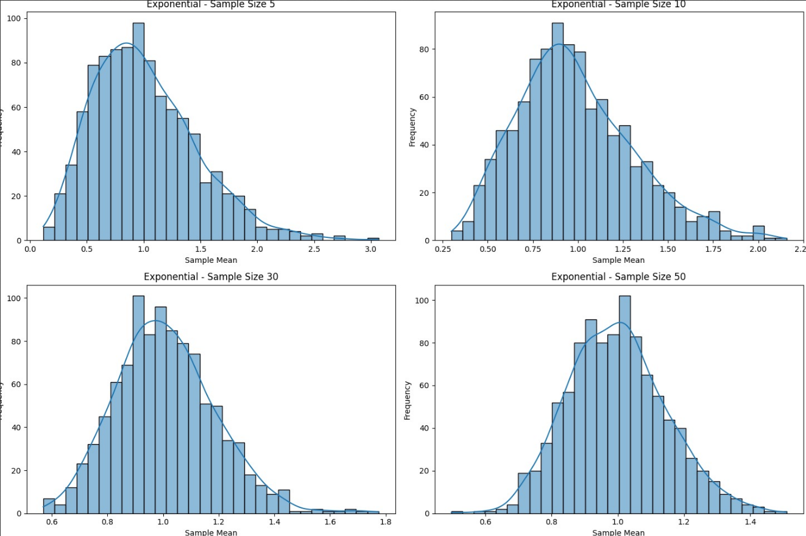
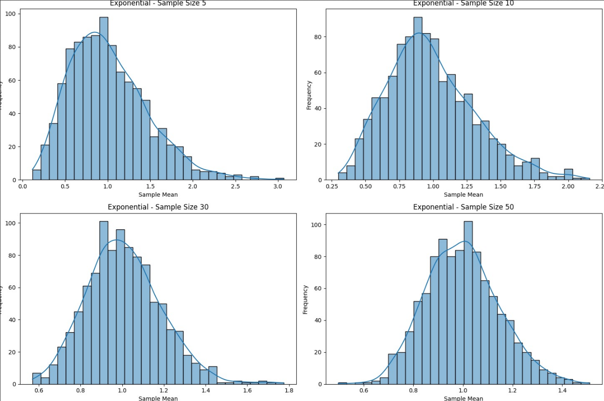

Comprehensive Statistical Simulation Report
Problem 1: Exploring the Central Limit Theorem (CLT) through Simulations
Motivation
The Central Limit Theorem (CLT) is a key concept in inferential statistics. It asserts that the distribution of the sample mean of a sufficiently large number of independent and identically distributed (i.i.d.) random variables tends toward a normal distribution, regardless of the shape of the original population distribution. This result is significant because it provides a theoretical justification for the widespread use of the normal distribution in hypothesis testing, confidence interval estimation, and control processes.
CLT has real-world significance in domains such as manufacturing, medicine, finance, and social sciences, where it facilitates predictive modeling and statistical inference even when the underlying population is unknown or skewed.
Objectives
- Simulate populations from multiple distributions (Uniform, Exponential, Binomial).
- Draw repeated samples of various sizes.
- Calculate sample means to build sampling distributions.
- Visualize the convergence of these sampling distributions to a normal distribution.
- Analyze how sample size and population variance influence convergence.
Population Distributions and Justification
- Uniform Distribution: Represents complete randomness within bounds (e.g., sensor noise).
- Exponential Distribution: Captures time-between-event data (e.g., radioactive decay).
- Binomial Distribution: Models success/failure outcomes (e.g., clinical trial results).
Each simulated population consists of 100,000 values.
import numpy as np
import matplotlib.pyplot as plt
import seaborn as sns
np.random.seed(0)
N = 100000
uniform_pop = np.random.uniform(0, 1, N)
exponential_pop = np.random.exponential(1, N)
binomial_pop = np.random.binomial(10, 0.5, N)
Sampling and Sample Mean Calculation
We generate 10,000 samples for each distribution at sizes \(n = 5\), \(10\), \(30\), and \(50\).
def sample_means(pop, sample_sizes, num_samples):
means = {}
for n in sample_sizes:
means[n] = [np.mean(np.random.choice(pop, size=n)) for _ in range(num_samples)]
return means
sample_sizes = [5, 10, 30, 50]
uniform_means = sample_means(uniform_pop, sample_sizes, 10000)
exponential_means = sample_means(exponential_pop, sample_sizes, 10000)
binomial_means = sample_means(binomial_pop, sample_sizes, 10000)
 

Theoretical Basis
According to CLT:
Where: - \(\bar{X}\) is the sample mean - \(\mu\) is the population mean - \(\sigma^2\) is the population variance - \(n\) is the sample size
Discussion & Implications
- Skewed distributions like exponential require larger \(n\) for the CLT to manifest clearly.
- Spread of the sampling distribution decreases with increasing \(n\) (due to \(1/\sqrt{n}\) scaling).
- Even with moderate sample sizes (\(n = 30\)), the CLT provides remarkably accurate approximations.
Applications: - Polling - Quality control - Financial modeling - Clinical trials